전산응용기계제도기능사 (2003-10-05 기출문제)
1과목: 기계재료 및 요소
1. 모듈3, 잇수 30과 60의 한 쌍의 표준 평기어의 중심거리는 얼마인가?
- 114 ㎜
- 126 ㎜
- 135 ㎜
- 148 ㎜
(정답률: 75%)

2. 바깥지름 126, 잇수 40인 스퍼기어의 모듈은?
- 6
- 3.15
- 2.5
- 3
(정답률: 37%)
3. 금속의 조직검사로서 측정이 불가능한 것은?
- 기공
- 결정입도
- 내부응력
- 결함
(정답률: 41%)
4. 일반적으로 60㎜ 이하의 작은 축에 사용되고 특히 테이퍼축에 사용이 용이하며, 축의 강도가 약하게 되기는 하나 키에 키홈 등의 가공이 쉬운 것은?
- 성크키
- 접선키
- 반달키
- 원뿔키
(정답률: 38%)
5. 탄소강에서 탄소량이 증가할 때 기계적 성질 변화에 알맞는 것은?
- 경도증가, 연성감소
- 경도증가, 연성증가
- 경도감소, 연성감소
- 경도감소, 연성증가
(정답률: 65%)
6. 주조시 주형에 냉금을 삽입하여 표면을 급냉시켜 경도를 증가시킨 내마모성 주철은?
- 가단주철
- 고급주철
- 칠드주철
- 합금주철
(정답률: 56%)
7. 원통 커플링의 종류에 속하지 않는 것은?
- 반중첩 커플링
- 머프 커플링
- 셀러 커플링
- 플렌지 커플링
(정답률: 39%)
8. 베어링 메탈의 구비 조건이 아닌 것은?
- 열전도도가 좋아야 한다.
- 피로 강도가 작아야 한다.
- 내부식성이 좋아야 한다.
- 마찰이나 마멸이 적어야 한다.
(정답률: 47%)
9. 다음 중 하중이 작용하는 방향에 따른 분류를 나타낸 것 중 틀린 것은?
- 인장 하중
- 휨 하중
- 전단 하중
- 충격 하중
(정답률: 46%)
10. Fe-C 상태도에서 온도가 낮은 것부터 일어나는 순서가 맞는 것은?
- 포정점〈 자기변태점〈 공석점〈 공정점
- 공석점〈 자기변태점〈 공정점〈 포정점
- 공석점〈 공정점〈 자기변태점〈 포정점
- 공정점〈 공석점〈 자기변태점〈 포정점
(정답률: 50%)
2과목: 기계가공법 및 안전관리
11. 청동의 한 종류로 8~12% Sn에 1~2% Zn을 넣어 만든 합금으로 내해수성이 좋고 수압, 증기압에도 잘 견디므로 선박용 재료로 널리 사용되는 것은?
- 특수 청동
- 포금
- 인청동
- 연청동
(정답률: 51%)
12. 체결용 요소 중 볼나사(ball screw)의 장점을 설명한 것 중 올바르지 않는 것은?
- 나사의 효율이 좋다.
- 백래시를 작게 할 수 있다.
- 먼지에 의한 마모가 적다.
- 자동 체결용으로 좋다.
(정답률: 36%)
13. 다음 중 불변강의 종류에 속하지 않는 것은?
- 인코넬
- 엘린바
- 플라티나이트
- 인바
(정답률: 26%)
14. 공작기계, 자동차, 선박 및 항공기에 사용되는 소결마찰 재료로서의 구비조건 중 틀린 것은?
- 내마모성, 내열성이 클 것
- 마찰계수가 적고 안정적일 것
- 열전도성, 내유성이 좋을 것
- 가격이 저렴할 것
(정답률: 22%)
15. 길이 200 cm의 정사각형 봉에 8 ton의 인장하중이 작용할 때 정사각형의 한 변의 길이는? (단, 봉의 허용응력은 500 kgf/㎠ 이다.)
- 4cm
- 6cm
- 8cm
- 10cm
(정답률: 33%)
16. 브로치라는 공구를 사용하여 일감의 표면 또는 내면을 필요한 모양으로 절삭가공하는 기계는?
- 마찰전단기
- 크랭크절삭기
- 브로칭 머신
- 밀링 머신
(정답률: 78%)
17. 직경 30㎜인 환봉을, 318rpm으로 선반 가공 할 때의 절삭속도는 약 몇 m/min인가?
- 30
- 40
- 50
- 60
(정답률: 50%)
18. 연삭숫돌 입자의 크기는 "굵기를 표시하는 숫자"로 나타내는 데, 이것을 무엇이라 하는가?
- 조직
- 입자
- 입도
- 결합도
(정답률: 51%)
19. 분할변환기어,이송변환기어,차동변환기어를 구비하고 있는 공작기계는?
- 만능드릴머신
- 슬로터
- 호빙머신
- 만능연삭기
(정답률: 28%)
20. 일반적으로 바이스의 크기를 나타내는 것은?
- 바이스 전체의 중량
- 물건을 물릴 수 있는 조오의 폭
- 물건을 물릴 수 있는 최대 거리
- 바이스의 최대 높이
(정답률: 33%)
21. 미터나사에서 지름이 14㎜, 피치가 2㎜의 나사를 태핑(tapping) 하기 위한 드릴구멍의 지름은 몇㎜로 하는가?
- 16
- 14
- 12
- 10
(정답률: 55%)
22. 래핑작업에서 랩제로 사용되지 않는 것은?
- 탄화규소(SiC)
- 알루미나(Aℓ2O3)
- 산화철
- 탄소강
(정답률: 44%)
23. 밀링작업시 상향 절삭의 장점이 아닌 것은?
- 기계에 무리를 주지 않는다.
- 날이 부러질 염려가 없다.
- 이송기구의 백래시가 자연히 제거된다.
- 날의 마멸이 작고 수명이 길다.
(정답률: 38%)
24. 바이트의 날끝 반지름 r = 0.5㎜, 이송 s = 0.2㎜/rev 일 때 다듬질 표면 거칠기의 이론값은?
- 1.0
- 0.1
- 0.01
- 0.04
(정답률: 30%)
25. 선반에서 다음 식은 어떤 방법으로 테이퍼를 가공할 때 계산하는 공식인가?
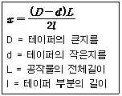
- 복식공구대를 경사시키는 방법
- 심압대를 편위 시키는 방법
- 테이퍼 절삭장치를 사용한 방법
- 백오프(back off)장치 이용 방법
(정답률: 46%)
3과목: 기계제도
26. 호칭지름이 40㎜, 피치가 7㎜인 1줄 미터 사다리꼴나사의 올바른 표시방법은?
- Tr40 × 7
- Tr40 × 7H
- M40 × 7
- M40 × 7H
(정답률: 52%)
27. 끼워맞춤에서 IT 기본공차 등급이 작아질 때의 공차값의 변화는? (단, 기타 조건은 일정하다.)
- 항상 같다.
- 관계없다.
- 작아진다.
- 커진다.
(정답률: 58%)
28. 동차 좌표계(homogeneous coordinate system)를 이용하는 경우 2차원 CAD에서 최대 좌표변환 행렬은?
- 2 × 2
- 4 × 4
- 3 × 3
- 3 × 4
(정답률: 32%)
29. 전체 둘레 현장 용접을 나타내는 보조 기호는?
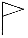
(정답률: 72%)
30. 다음 표면 지시기호중 가공방법을 지시하는 곳은?
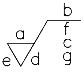
- a
- b
- d
- g
(정답률: 63%)
31. 다음 중 단면 도시방법에 대한 설명이 틀린 것은?
- 단면 부분을 확실하게 표시하기 위하여 보통 해칭(hatching)을 한다.
- 해칭을 하지 않아도 단면이라는 것을 알 수 있을 때에는 해칭을 생략해도 된다.
- 같은 절단면 위에 나타나는 같은 부품의 단면은 해칭선의 간격을 달리한다.
- 단면은 필요로 하는 부분만을 파단하여 표시할 수 있다.
(정답률: 51%)
32. 다음 기하공차의 종류 중 모양공차에 해당되는 것은?
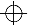
(정답률: 70%)
33. 다음은 재료기호의 중간 부분의 기호이다. 공구강을 나타내는 기호는?
- K
- B
- C
- W
(정답률: 47%)
34. 나사를 도시할 때 나사 중심선과 불완전 나사부가 이루는 각도는 얼마인가?
- 15°
- 30°
- 45°
- 70°
(정답률: 64%)
35. 외형선 및 숨은선의 연장선을 표시하는데 사용되는 선은?
- 가는 1점쇄선
- 가는 실선
- 가는 2점쇄선
- 파선
(정답률: 40%)
36. CAD의 편집 기능에 해당하는 것과 거리가 먼 것은?
- 이동
- 소거
- 복사
- 호출
(정답률: 69%)
37. 도면에서 표면상태를 줄무늬 방향의 기호로 표시하였다. R은 무엇을 뜻하는가?
- 가공에 의한 커터의 줄무늬 방향이 투상면에 평행
- 가공에 의한 커터의 줄무늬 방향이 레이디얼 모양
- 가공에 의한 커터의 줄무늬 방향이 동심원 모양
- 가공에 의한 줄무늬 방향이 경사지고 두방향으로 교차
(정답률: 79%)
38. 컴퓨터에서 중앙처리 장치의 구성이라 볼 수 없는 것은?
- 제어장치
- 주기억장치
- 연산장치
- 입출력장치
(정답률: 75%)
39. 위치를 지정하는 방법으로 CAD 시스템에서 가장 부정확한 입력방법은?
- 요소의 중간점 인식에 의한 점
- 요소의 끝점 인식에 의한 점
- 교차점 입력에 의한 점
- 화면의 커서 인식에 의한 점
(정답률: 70%)
40. 컴퓨터의 기억용량 표시가 틀린 것은?
- 1 Gigabyte = 230 byte
- 1 Megabyte = 220 byte
- 1 Kilobyte = 210 byte
- 1 byte = 16 bit
(정답률: 57%)
41. 다음 그래픽 디스플레이 장치 중 음극선관(CRT)을 사용한 것이 아닌 것은?
- 랜덤 스캔형
- 래스터 스캔형
- 스토리지형
- 플라스마형
(정답률: 36%)
42. 기어 제도법에 대한 설명 중 옳지 않는 것은?
- 스퍼기어의 이끝원은 굵은 실선으로 그린다.
- 맞물리는 한 쌍 기어의 도시에서 맞물림부의 이끝원은 모두 굵은 실선으로 그린다.
- 헬리컬 기어의 잇줄 방향은 3개의 가는 실선으로 그린다.
- 스퍼기어의 피치원은 가는 2점쇄선으로 그린다.
(정답률: 59%)
43. 다음 중 표면거칠기 표시 방법에 해당되지 않는 것은?
- 최소 높이
- 최대 높이
- 산술 평균 거칠기
- 10점 평균 거칠기
(정답률: 59%)
44. 다음은 기계 요소 중에서 원칙적으로 길이 방향으로 절단하여 단면하지 않는 것이다. 틀린 것은?
- 축, 키
- 리벳, 핀
- 볼트, 작은나사
- 베어링, 너트
(정답률: 47%)
45. 구름 베어링의 호칭 번호가 "6203ZZ"일 때 베어링의 안지름은?
- 10
- 13
- 15
- 17
(정답률: 72%)
46. 나사의 각부를 그릴 때 선의 종류로 맞는 것은?
- 수나사 바깥지름, 암나사 안지름 : 가는 실선
- 수나사와 암나사의 골 : 굵은 실선
- 완전 나사부와 불완전 나사부의 경계선 : 굵은 실선
- 가려서 보이지 않는 나사부 : 가는 실선
(정답률: 60%)
47. 가공전후의 형상을 나타낼 때 사용하는 선은?
- 파선
- 가는 실선
- 가는 1점 쇄선
- 가는 2점 쇄선
(정답률: 54%)
48. 수나사 막대의 양 끝에 나사를 깍은 머리없는 볼트로서, 한끝은 본체에 박고 다른 끝은 너트로 죌때 쓰이는 것은?
- 관통 볼트
- 미니추어 볼트
- 스터드 볼트
- 탭 볼트
(정답률: 59%)
49. 구멍의 치수가 축의 치수보다 클 때, 구멍과 축과의 치수의 차를 무엇이라고 하는가?
- 틈새
- 죔새
- 공차역
- 치수차
(정답률: 70%)
50. 배관도의 제도에 대한 설명 중 잘못된 것은?
- 치수는 밸브의 목 입구의 중심에서 중심까지의 길이로 표시한다.
- 파이프의 호칭지름은 복선이나 단선으로 표시된 파이프라인 밖으로 지시선을 끌어내어 표시한다.
- 배관도에는 단선 도시 방법과 복선 도시방법이 있다.
- 파이프이음 기호를 사용하지 않고 파이프와 파이프이음을 실물모양과 같게 나타내는 방법을 단선 도시라 한다.
(정답률: 47%)
51. 도면을 축소 또는 확대 복사를 할 때의 편의를 위하여 윤곽선의 외부에 그려주는 것은?
- 비교표시
- 비교마크
- 중심마크
- 비교눈금
(정답률: 42%)
52. 척도 기입 방법에 대한 설명으로 틀린 것은?
- 척도는 표제란에 기입하는 것이 원칙이다.
- 같은 도면에서는 서로 다른 척도를 사용할 수 없다.
- 표제란이 없는 경우에는 도명이나 품번 가까운 곳에 기입한다.
- 현척이 가장 보편적으로 사용된다.
(정답률: 59%)
53. 대상물의 일부를 파단한 경계 또는 일부를 떼어낸 경계를 표시하는데 사용하는 선은?
- 파단선
- 지시선
- 가상선
- 절단선
(정답률: 75%)
54. 다음 리벳 중 호칭길이의 표시방법이 다른 것은?
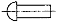
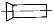
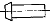
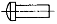
(정답률: 46%)
55. 다음 중 기하공차의 기호 설명이 잘못된 것은?
- 평면도 :
- 원통도 :
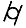
- 대칭도 :
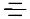
- 위치도 :
(정답률: 79%)
56. 화면 표시장치에 나타난 모양을 확대, 축소 등의 다른 조작 없이 그대로 종이 등의 물리적 요소에 출력시키는 장치를 무엇이라 하는가?
- 스캐너
- 라이트펜
- 모니터
- 화면복사장치
(정답률: 50%)
57. 보기의 그림은 V벨트의 단면이다. 벨트의 각 α 는 몇 도 인가?
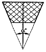
- 30°
- 35°
- 40°
- 45°
(정답률: 35%)
58. 다음 보기의 그림은 체인의 종류 중 어느 것을 나타낸 것인가?
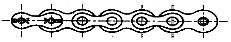
- 롤러체인
- 사일런트체인
- 링크체인
- 인벌류트체인
(정답률: 37%)
59. 기계제도에서 투상도의 선택방법에 대한 설명으로 틀린 것은?
- 계획도, 조립도 등 주로 기능을 나타내는 도면에서는 대상물을 사용하는 상태로 놓고 그린다.
- 부품을 가공하기 위한 도면에서는 가공 공정에서 대상물이 놓인 상태로 그린다.
- 정면도에서는 대상물의 모양이나 기능을 가장 뚜렷하게 나타내는 면을 그린다.
- 정면도를 보충하는 다른 투상도는 되도록 크게 그리고 많이 그린다.
(정답률: 77%)
60. 표면 거칠기의 표시법에서 10점 평균 거칠기를 표시하는 기호는?
- Ry
- Rm
- Ra
- Rz
(정답률: 45%)